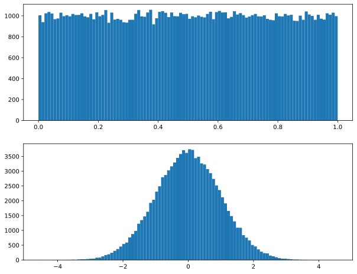

numpyの導入
1 学ぶこと
- Numpy配列の作り方
- Numpy配列のデータ型
- データ型のキャスト
2 NumPyとは
3 NumPy配列の初期化
4 NumPy配列のインデックスによるアクセス
スライスを使った直接の代入も可能である．
リストのスライスを使った代入は，要素数を変える黒魔術であることに注意．
基本的には使わないこと.
numpyの配列はインプレイスな演算もサポートしている.
5 NumPy配列の計算
6 ベストプラクティス
上記のようにNumPy配列はループを使わない処理が可能である． 数値演算を高速化する場合には，ループ（ピュアなPython）に依存しないようにすることが重要.
1,260.662 [msec]7 NumPy配列を簡単に呼び出す
よく使うのはコレらしい.
- np.arange
- np.ones
- np.zeros
- np.ones_like
- np.zeros_like
- np.linspace
- np.random.rand
- np.random.randn
- np.full
- np.empty
- np.concatenate
Code

array([5, 5, 5, 5, 5, 5, 5, 5, 5, 5])8 データ型
Code
<class 'numpy.uint8'> 1.0
<class 'numpy.int32'> 4.0
<class 'numpy.float64'> 8.0
<class 'object'> 8.0
<U10 40.0
<class 'bool'> 1.09 ブーリアンマスク
NumPyの配列のスライスは，インデックスだけでなく，ブール型でも可能である.
10 キャスト
astypeメソッドを使う.
array([0, 1, 2, 3, 4, 5, 6, 7, 8, 9], dtype=uint8)array(['0', '1', '2', '3', '4', '5', '6', '7', '8', '9'], dtype='<U10')11 演習問題
11.1 question 01
11.2 question 02
11.3 question 03
11.4 question 04
11.5 question 06
Code
array([1, 2, 'fizz', 4, 'buzz', 'fizz', 7, 8, 'fizz', 'buzz', 11, 'fizz',
13, 14, 'fizz_buzz', 16, 17, 'fizz', 19, 'buzz', 'fizz', 22, 23,
'fizz', 'buzz', 26, 'fizz', 28, 29, 'fizz_buzz', 31, 32, 'fizz',
34, 'buzz', 'fizz', 37, 38, 'fizz', 'buzz', 41, 'fizz', 43, 44,
'fizz_buzz', 46, 47, 'fizz', 49, 'buzz', 'fizz', 52, 53, 'fizz',
'buzz', 56, 'fizz', 58, 59, 'fizz_buzz', 61, 62, 'fizz', 64,
'buzz', 'fizz', 67, 68, 'fizz', 'buzz', 71, 'fizz', 73, 74,
'fizz_buzz', 76, 77, 'fizz', 79, 'buzz', 'fizz', 82, 83, 'fizz',
'buzz', 86, 'fizz', 88, 89, 'fizz_buzz', 91, 92, 'fizz', 94,
'buzz', 'fizz', 97, 98, 'fizz', 'buzz'], dtype=object)11.6 question 07
Code
array([1, 2, 'fizz', 4, 'buzz', 'fizz', 7, 8, 'fizz', 'buzz', 11, 'fizz',
13, 14, 'fizzbuzz', 16, 17, 'fizz', 19, 'buzz', 'fizz', 22, 23,
'fizz', 'buzz', 26, 'fizz', 28, 29, 'fizzbuzz', 31, 32, 'fizz', 34,
'buzz', 'fizz', 37, 38, 'fizz', 'buzz', 41, 'fizz', 43, 44,
'fizzbuzz', 46, 47, 'fizz', 49, 'buzz', 'fizz', 52, 53, 'fizz',
'buzz', 56, 'fizz', 58, 59, 'fizzbuzz', 61, 62, 'fizz', 64, 'buzz',
'fizz', 67, 68, 'fizz', 'buzz', 71, 'fizz', 73, 74, 'fizzbuzz', 76,
77, 'fizz', 79, 'buzz', 'fizz', 82, 83, 'fizz', 'buzz', 86, 'fizz',
88, 89, 'fizzbuzz', 91, 92, 'fizz', 94, 'buzz', 'fizz', 97, 98,
'fizz', 'buzz', 101], dtype=object)11.7 question 08
Code
array([1, 2, 'あほ', 4, 5, 'あほ', 7, 8, 'あほ', 10, 11, 'あほ', 'あほ', 14, 'あほ',
16, 17, 'あほ', 19, 20, 'あほ', 22, 'あほ', 'あほ', 25, 26, 'あほ', 28, 29,
'あほ', 'あほ', 'あほ', 'あほ', 'あほ', 'あほ', 'あほ', 'あほ', 'あほ', 'あほ', 40, 41,
'あほ', 'あほ', 44, 'あほ', 46, 47, 'あほ', 49, 50, 'あほ', 52, 'あほ', 'あほ',
55, 56, 'あほ', 58, 59, 'あほ', 61, 62, 'あほ', 64, 65, 'あほ', 67, 68,
'あほ', 70, 71, 'あほ', 'あほ', 74, 'あほ', 76, 77, 'あほ', 79, 80, 'あほ', 82,
'あほ', 'あほ', 85, 86, 'あほ', 88, 89, 'あほ', 91, 92, 'あほ', 94, 95, 'あほ',
97, 98, 'あほ', 100], dtype=object)11.8 question 09
Code
array([ 0, 1, 0, 0, 4, 0, 0, 0, 0, 9, 0, 0, 0,
0, 0, 0, 16, 0, 0, 0, 0, 0, 0, 0, 0, 25,
0, 0, 0, 0, 0, 0, 0, 0, 0, 0, 36, 0, 0,
0, 0, 0, 0, 0, 0, 0, 0, 0, 0, 49, 0, 0,
0, 0, 0, 0, 0, 0, 0, 0, 0, 0, 0, 0, 64,
0, 0, 0, 0, 0, 0, 0, 0, 0, 0, 0, 0, 0,
0, 0, 0, 81, 0, 0, 0, 0, 0, 0, 0, 0, 0,
0, 0, 0, 0, 0, 0, 0, 0, 0, 100, 0, 0, 0,
0, 0, 0, 0, 0, 0, 0, 0, 0, 0, 0, 0, 0,
0, 0, 0, 0, 121, 0, 0, 0, 0, 0, 0, 0, 0,
0, 0, 0, 0, 0, 0, 0, 0, 0, 0, 0, 0, 0,
0, 144, 0, 0, 0, 0, 0, 0, 0, 0, 0, 0, 0,
0, 0, 0, 0, 0, 0, 0, 0, 0, 0, 0, 0, 0,
169, 0, 0, 0, 0, 0, 0, 0, 0, 0, 0, 0, 0,
0, 0, 0, 0, 0, 0, 0, 0, 0, 0, 0, 0, 0,
0, 0, 0, 0, 0])11.9 question 10
Code
array([15. , 15.83, 16.67, 17.5 , 18.33, 19.17, 20. , 20.83, 21.67,
22.5 , 23.33, 24.17, 25. , 25.83, 26.67, 27.5 , 28.33, 29.17,
30. , 30.83, 31.67, 32.5 , 33.33, 34.17, 35. , 35.83, 36.67,
37.5 , 38.33, 39.17, 40. , 40.83, 41.67, 42.5 , 43.33, 44.17,
45. , 45.83, 46.67, 47.5 , 48.33, 49.17, 50. , 50.83, 51.67,
52.5 , 53.33, 54.17, 55. , 55.83, 56.67, 57.5 , 58.33, 59.17,
60. , 60.83, 61.67, 62.5 , 63.33, 64.17, 65. ])11.10 question 11
11.11 question 12
Code
(array([ 0. , 0.90365484, 0.77400118, -0.24070502, -0.98017057,
-0.59883364, 0.46725577, 0.99904896, 0.38845266, -0.66633031]),
array([ 0. , 0.90365484, 0.77400118, -0.24070502, -0.98017057,
-0.59883364, 0.46725577, 0.99904896, 0.38845266, -0.66633031]))11.12 question 13
Code
array([ 1000, 1500, 2000, 2500, 3000, 3500, 4000, 4500, 5000,
5500, 6000, 6500, 7000, 7500, 8000, 8500, 9000, 9500,
10000, 10500, 11000, 11500, 12000, 12500, 13000, 13500, 14000,
14500, 15000, 15500, 16000, 16500, 17000, 17500, 18000, 18500,
19000, 19500, 20000, 20500, 21000, 21500, 22000, 22500, 23000,
23500, 24000, 24500, 25000, 25500, 26000, 26500, 27000, 27500,
28000, 28500, 29000, 29500, 30000])array([ 650, 975, 1300, 1625, 1950, 2275, 2600, 2925, 3250,
3576, 3900, 4225, 4550, 4875, 5200, 5525, 5850, 6175,
6500, 6826, 7151, 7476, 7800, 8125, 8450, 8775, 9100,
9425, 9750, 10075, 10400, 10725, 11050, 11375, 11700, 12025,
12350, 12675, 13000, 13326, 13651, 13976, 14301, 14626, 14951,
15275, 15600, 15925, 16250, 16575, 16900, 17225, 17550, 17875,
18200, 18525, 18850, 19175, 19500])Code
array([ 0., 0., 0., 0., 0., 1000., 1000., 1000., 1000.,
1000., 1000., 1000., 1000., 1000., 1000., 1000., 1000., 1000.,
2000., 2000., 2000., 2000., 2000., 2000., 2000., 2000., 2000.,
2000., 2000., 2000., 2000., 2000., 3000., 3000., 3000., 3000.,
3000., 3000., 3000., 3000., 3000., 3000., 3000., 3000., 3000.,
4000., 4000., 4000., 4000., 4000., 4000., 4000., 4000., 4000.,
4000., 4000., 4000., 4000., 5000.])array([ 650., 975., 1300., 1625., 1950., 1275., 1600., 1925.,
2250., 2576., 2900., 3225., 3550., 3875., 4200., 4525.,
4850., 5175., 4500., 4826., 5151., 5476., 5800., 6125.,
6450., 6775., 7100., 7425., 7750., 8075., 8400., 8725.,
8050., 8375., 8700., 9025., 9350., 9675., 10000., 10326.,
10651., 10976., 11301., 11626., 11951., 11275., 11600., 11925.,
12250., 12575., 12900., 13225., 13550., 13875., 14200., 14525.,
14850., 15175., 14500.])11.13 question 14
Code
-1.00, -1.00, -1.00, -1.00, -1.00
-0.75, -1.00, -0.00, -1.00, 0.00
-0.50, -1.00, -0.00, -0.00, 0.00
-0.25, -1.00, -0.00, -0.00, 0.00
0.00, 0.00, 0.00, 0.00, 0.00
0.25, 0.00, 1.00, 0.00, 0.00
0.50, 0.00, 1.00, 0.00, 0.00
0.75, 0.00, 1.00, 1.00, 0.00
1.00, 1.00, 1.00, 1.00, 1.0011.14 question 15
11.15 question 16
array([0, 0, 0, 0, 0, 0, 0, 0, 0, 0, 1, 1, 1, 1, 1, 1, 1, 1, 1, 1, 2, 2,
2, 2, 2, 2, 2, 2, 2, 2, 3, 3, 3, 3, 3, 3, 3, 3, 3, 3, 4, 4, 4, 4,
4, 4, 4, 4, 4, 4], dtype=int32)11.16 question 17
11.17 question 18
question19からは，問題設定を読み込むのが面倒くさかったので，とりあえず飛ばしておく.